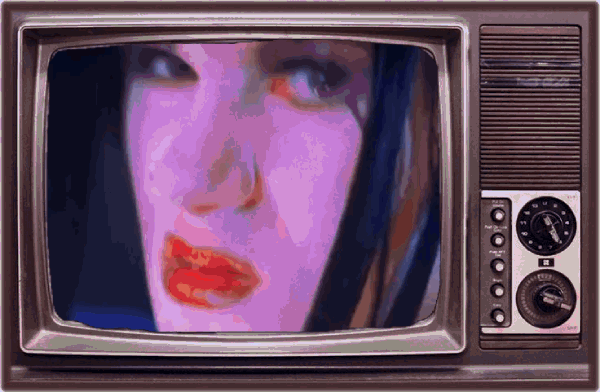

Hi you can call me Lety and welcome to my personal site!!!
You can read more about the page( credit, recoucers, inspos etc) here.

About me!
Lety she/her 20y brazilian
lety's favorites
 movies: fantstic mrs fox, marnie was there
movies: fantstic mrs fox, marnie was there  music: system of down, slipknot, korn, limp bizkit, babymetal, loona(yves utt), numetal in general
music: system of down, slipknot, korn, limp bizkit, babymetal, loona(yves utt), numetal in general anime/cartoon: saiki kusuo, adventure time, mp100
anime/cartoon: saiki kusuo, adventure time, mp100 book/ manga: The Perks of Being a Wallflower, Blue Flag
book/ manga: The Perks of Being a Wallflower, Blue Flag game: hollow knight, acnh, ib
game: hollow knight, acnh, ib character: Kusuo Saiki, Shun Kaidou, Reigen, Angel Devil, Cinnamon
character: Kusuo Saiki, Shun Kaidou, Reigen, Angel Devil, Cinnamon